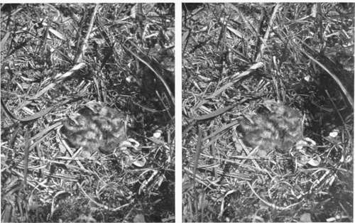
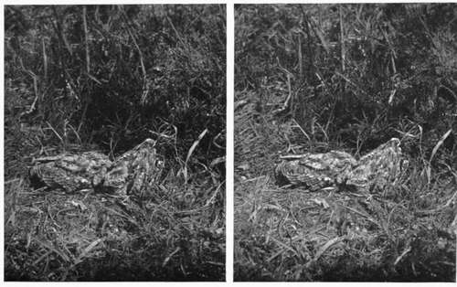
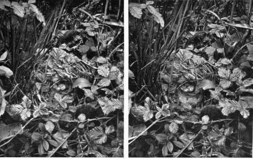
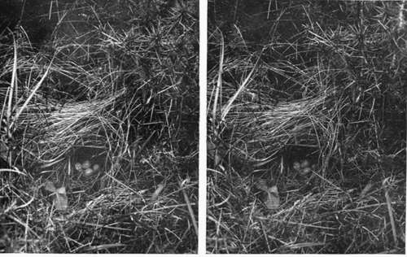

The Production Of Lantern Slides And Enlargements
Description
This section is from the book "Nature Photography For Beginners", by E. J. Bedford. Also available from Amazon: Nature Photography for Beginners.
The Production Of Lantern Slides And Enlargements
The Nature Photographer who has become proficient in the production of a good negative and print from it will probably wish to extend his operations. This he may do in the production of either lantern slides or enlargements, or both. The exhibition of lantern slides is, perhaps, of all methods, the best for showing any good results obtained in the field, because they may be seen by a large number of persons at the same time.
Every Nature Photographer should possess a projection lantern, so that not only his friends but he himself can see his results full size or even larger upon the screen. No print can compare with a good lantern transparency for quality, and any one who can produce a good negative will find it easy to make a good slide from it. Lantern slides may be made in two ways, by contact or by reduction. The former method is to be preferred when possible, as the work may be carried out by artificial light during the long winter evenings, when a set of slides can be made from the negatives obtained during the past season's work.
Fig. 20. Young Nightjars (egg shells still in nest).
Fig. 21. Young Nightjars (Photographed 9 days after Fig. 20).
In making a lantern slide from a stereoscopic negative, when, of course, only half the negative is used, it is a good plan to place a clear piece of glass the same size as the negative in the printing frame before placing the negative in it. This will avoid the chance of breaking the negative by the unequal pressure. The springs of the printing frame should also be slackened before the negative is placed in it, or one with weak springs kept specially for the making of lantern slides by contact. The choice of a lantern plate will be governed by the same considerations affecting the choice of a plate for negative making. The only thing I need say in reference to it is somewhat on the same lines as the well-known testimonial given to Pears' Soap. Since using Thomas's Lantern Plates I have used no others. (Verb, sap).
Lantern plates can be developed in a yellow light that would fog the rapid plates employed for negative making, and I always use my lamp with the screen of canary medium only, without the red glass. Lantern slides can also be made by reduction in the camera, and must be made in this way when the whole of the subject on a plate larger than the lantern plate itself is required. The production of slides by reducing in the camera can be carried out either by daylight or artificial light, and full particulars of working both processes will be found in the text-books.
Enlarging can also be done by daylight or artificial light, but in either case some form of enlarging camera will be required. One of the great advantages of using a small sized plate for negatives, apart from the reduction of size and weight in the kit of the photographer, is the easy way in which enlarged prints or negatives may be produced from the small ones. A good 1/4-plate negative can be enlarged to at least 15 X12 inches without serious loss of definition, and while the 1/4-plate is somewhat lost if framed and hung on a wall, the larger sizes are suitable for framing and hanging practically anywhere. As excellent manuals dealing with lantern slide making and enlarging can be purchased for sixpence, it is unnecessary to enter more fully into these most interesting processes here.
Fig. 22. Chiffchaff's Nest.
Fig. 23. Willow Warbler's Nest.
Continue to:
Tags
nature, photography, art, birds, camera